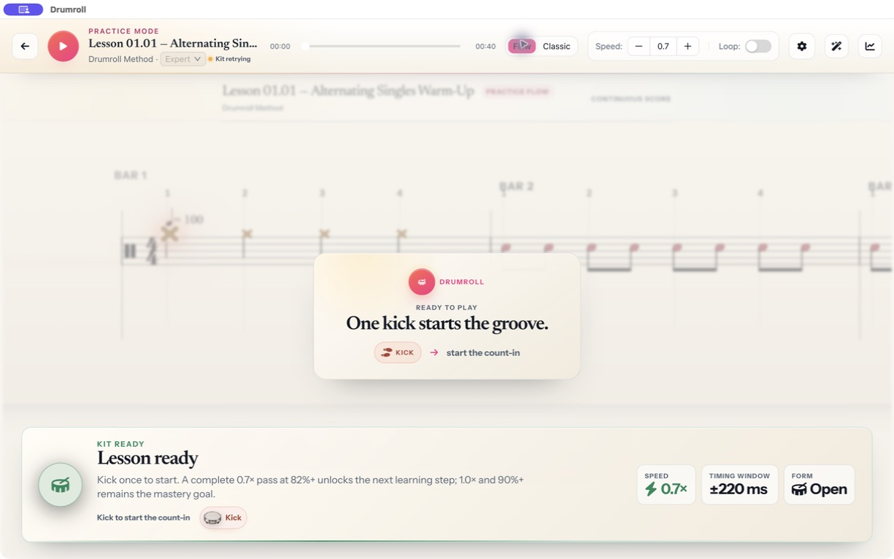
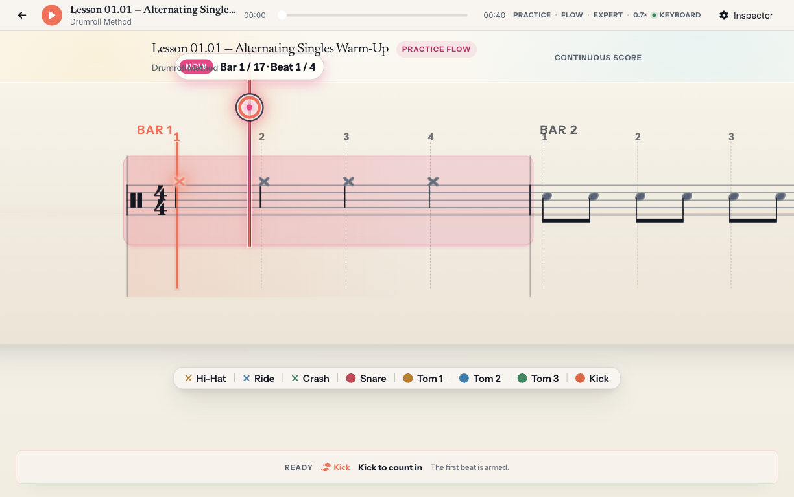
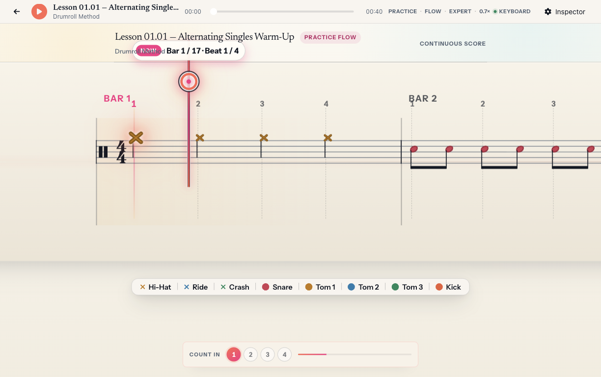
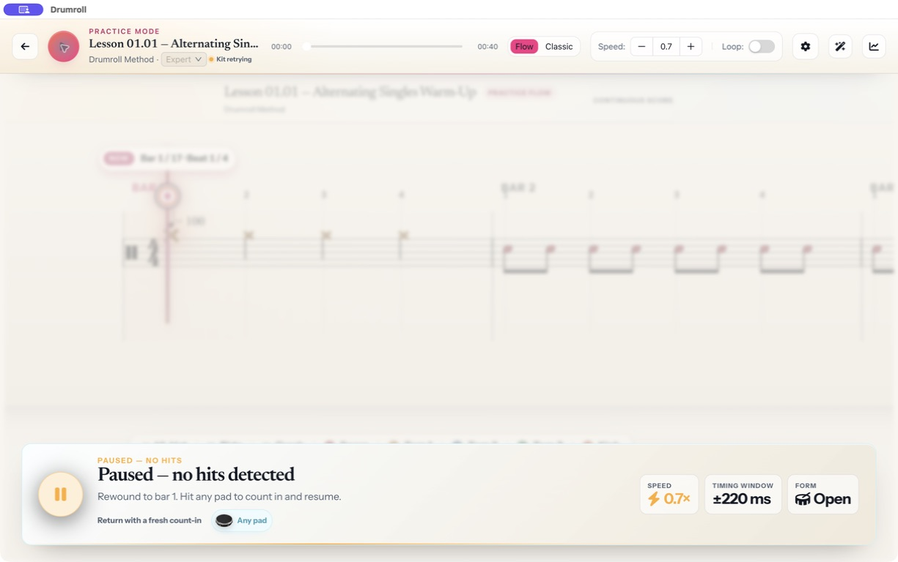
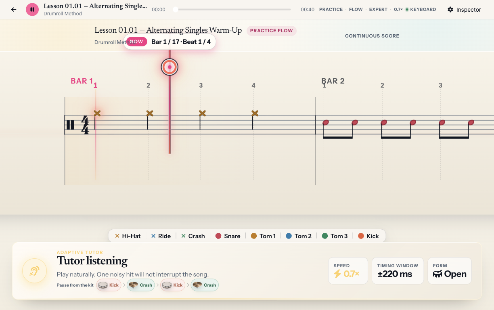
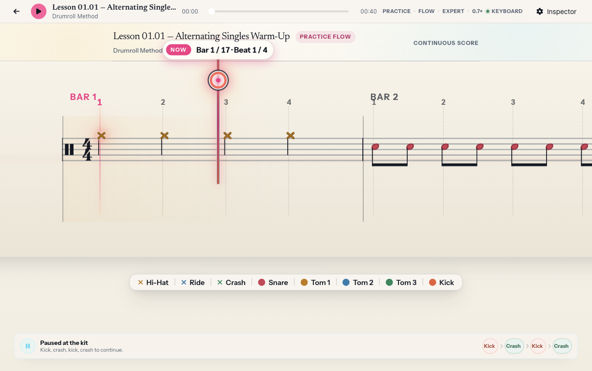
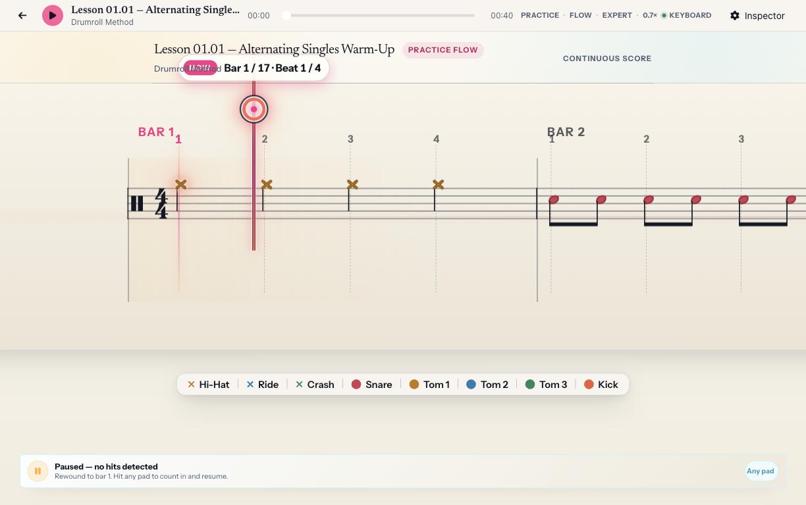

practice chrome – kb.8 baseline to kb.9
after frames come from a production Electron build at 1224 × 768, plus recovery at 1024 × 700. the nearest available kb.8 release frames are used where that release did not record a dedicated state.
ready
the score stays sharp; inactive glyphs are neutral, and the armed kick remains coral beside one compact action rail.


count-in
kb.8 has no dedicated count-in frame; its ready frame is the closest control and score baseline. kb.9 places the beat state beside the notation rather than in a large panel.

playing
the normal TutorHud remains available while performance controls move out of the toolbar.


pause
kb.8 has no separate timeout image; its playing frame is the nearest score baseline. the after frame keeps the score legible and uses one lower recovery line.

recovery
recovery keeps the same sharp score and compact local prompt at both supported viewports.
